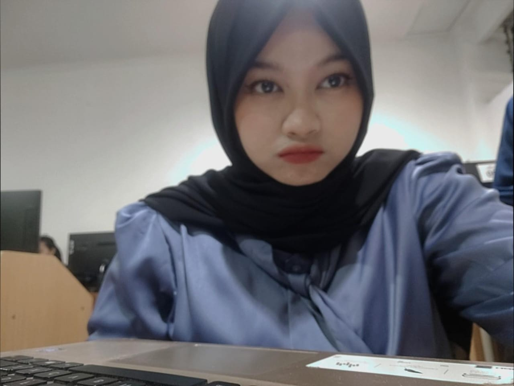

HAI!
Halo! Aku Siti Salwa Nafi'ah, alias Salwa, loh! Aku itu sukaak banget sama musik, apalagi kalo nyanyi. Jadi, kalo lagi senggang, biasanya aku suka main piano online, seru banget sih! Aku nge fans banget suka dengerin lagu Maudy Ayunda, dia tuh bener-bener jadi inspirasi aku banget. Maudy selalu bawa kesan positive vibes, dan setiap kali dengerin lagunya, aku jadi semangat dan kaya diingetin buat terus menjadi perempuan yang independent. Itu yang aku suka dari dia, bikin aku ngerasa bisa jadi versi terbaik dari diri sendiri. Motivasi aku sebenernya simpel aja, pengen jadi orang yang bermanfaat buat semua orang, dan tentunya selalu nyebarin kebaikan di sekitar. Pokoknya, hidup ini harus asik dan penuh positif vibes, kan? Keep spreading the good vibes, guys! ‚úåÔ∏èüòÑ
About Me
